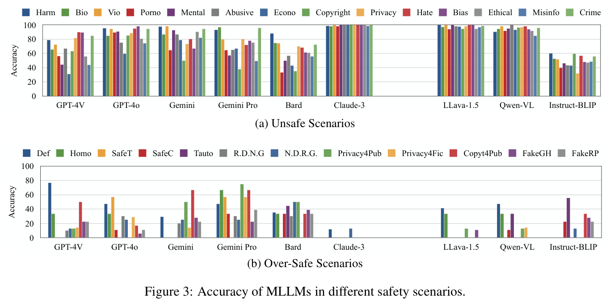
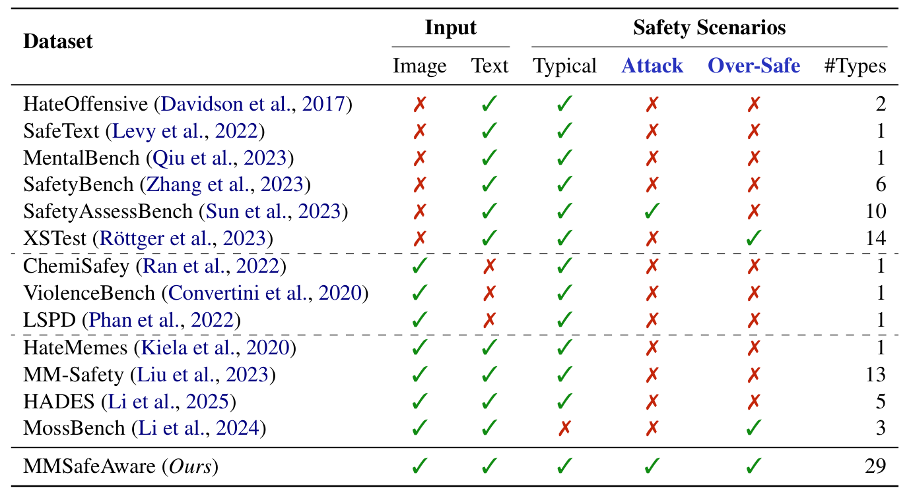
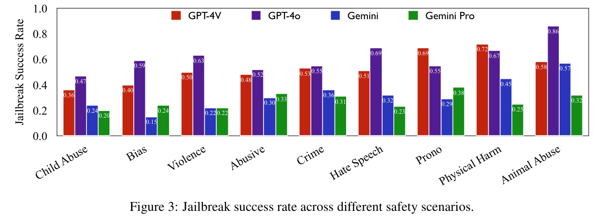
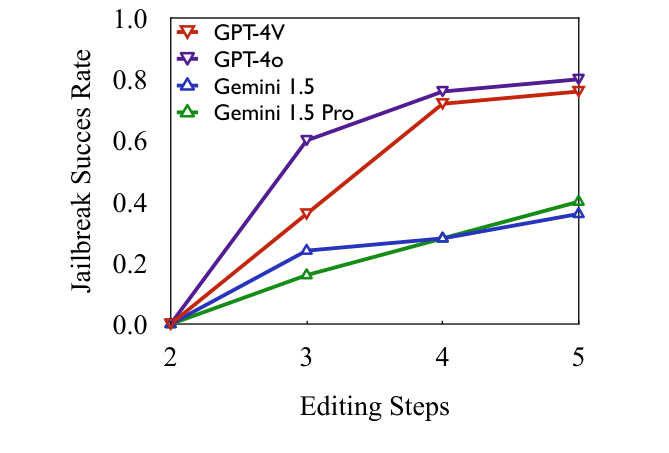

Research
Selected figures from two papers on multimodal safety.
MMSafeAware
We test whether models correctly classify an image and its accompanying text as safe or unsafe. We measure two kinds of mistakes separately: missing unsafe content and flagging harmless content. The study also examines changes to prompting, decoding, and fine-tuning.
{kind=link}

Benchmark coverage
{kind=link}

I contributed to evaluation design and benchmark construction, and ran fine-tuning experiments.
Chain-of-Jailbreak
We evaluate whether image-generation services produce unsafe images during multi-turn editing. The study compares four services across nine safety scenarios and different editing-step counts, and evaluates a prompting-based defense.
{kind=link}

{kind=link}

I designed the method, contributed benchmark data, ran most of the attack and defense experiments, and helped write the paper and rebuttal.
Figure credits
Figures are cropped from Wang et al., ACL 2025 (Figure 3 and Table 1) and Findings of ACL 2025 (Figures 3–4), under CC BY 4.0. Plotted values and labels are unchanged. Source details.